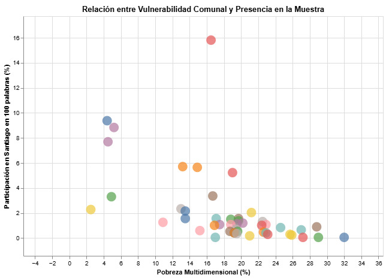

Santiago en 100 Palabras es el concurso de cuentos breves más grande del país, que año a año publica un libro de acceso gratuito en donde están los cien mejores cuentos de la respectiva edición. Si bien todos los habitantes pueden enviar sus cuentos desde la comuna que sea, al momento de ser premiados, el 89% son de la Región Metropolitana.
Es difícil identificar una tendencia respecto a cuántos llegan por comuna, no así respecto a cuántos quedan. Y al momento de quedar, hemos visto que la comuna es fundamental: pero no por cantidad de habitantes.
Al cruzar los datos de participación histórica con los índices de Pobreza Multidimensional de la encuesta CASEN 2022, podemos ver cómo este espacio donde, a priori, todos tienen las mismas posibilidades de ganar, favorece (queriéndolo o no) a los sectores con mayores ingresos de la región.

Gráfico que demuestra correlación negativa donde, a medida que una comuna se desplaza hacia la derecha del eje X (mayor pobreza), su presencia cae drásticamente hacia el suelo del gráfico.
En el gráfico analizado, podemos observar cómo Santiago, Providencia, Ñuñoa y Las Condes concentran prácticamente el 40% de todos los cuentos premiados a lo largo de las ediciones del concurso. A excepción de la comuna de Santiago, este bloque presenta los indicadores de pobreza más bajos de la región, con cifras del 4,4% en Providencia o el 4,5% en Las Condes.
Explora los datos con tu cursor
Pasa el mouse sobre las burbujas para ver los datos detallados de cada comuna. Puedes hacer zoom y arrastrar el gráfico.
Las comunas que registran una sola presencia dentro de los cuentos reconocidos históricamente son, coincidentemente, las que encabezan el ranking de pobreza multidimensional: Talagante (17%), Isla de Maipo (22%), San José de Maipo (24,5%) y casos críticos como María Pinto (27,2%) o Tiltil (29%). El punto más extremo lo ocupa San Pedro, la comuna más pobre de la región con un 32%, cuya burbuja en el gráfico se sitúa en casi el cero.
Si metiéramos todos los cuentos finalistas de la historia en una tómbola, tendrías exactamente 1 probabilidad entre 1.900 de extraer un cuento ganador proveniente de Talagante (escrito por Trinidad Vergara Salinas, de 16 años). En cambio, al meter la mano, tendrías más de 100 oportunidades de sacar un relato de Ñuñoa, Providencia o Las Condes.
La excepción de Santiago Centro
Un hallazgo fundamental es la excepción que parece ser la comuna de Santiago. La “excepción” refiere a que dicha comuna, a diferencia de Las Condes, Providencia y Ñuñoa, está en un rango ligeramente menor a la mediana de la pobreza multidimensional en la Región Metropolitana (18,9% > 16,5%), y bastante lejos de los rangos que manejan las comunas con menos pobreza.
¿A qué se puede atribuir esto? A que Santiago históricamente ha tenido un componente educacional que difiere de otras comunas. Si bien hoy han visto afectada su reputación, los liceos emblemáticos (colegios públicos de excelencia académica) fueron por años los mejores centros educacionales del país, en su mayoría repartidos por Santiago Centro.
A pesar de no existir un componente de capital económico exageradamente distinto al promedio regional, sí se puede inferir que existe, al menos, una diferencia en capital cultural: factor indispensable para la calidad al momento de escribir.
Dicho esto,
Podemos colegir que la premiación de un cuento (al ser catalogado dentro de los cien mejores por edición) está intrínsecamente ligada a las condiciones materiales y educativas del autor, las que son indisolubles al panorama de la comuna donde reside.